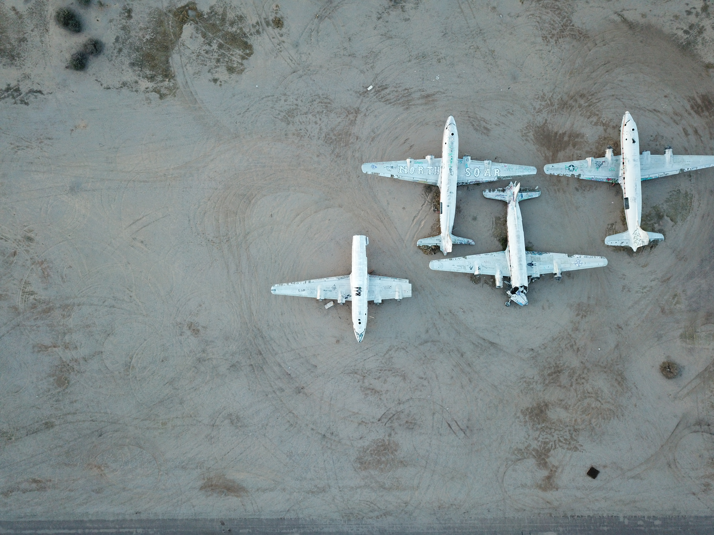
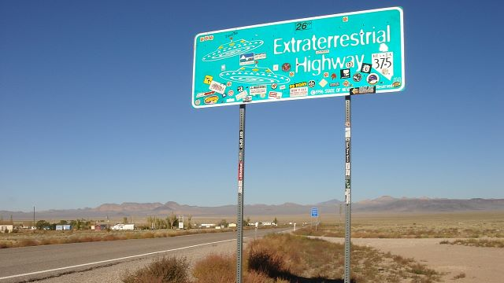

Back in 1955, according to a recently declassified CIA report, a trio of secret operatives scouted the western U.S. for a remote place where the government could test the prototype of the U-2 spy plane. One day, they flew over the Groom Lake salt flat in Nevada, and found exactly were looking for — an old abandoned Army Air Corps airstrip that was just 100 miles (161 km) from Las Vegas, yet so far off the beaten path that it didn't even have a name. On government maps, the place was designated nondescriptly as Area 51 of the Nevada Test Site. For decades, officials tried to avoid even acknowledging the top-secret base's existence, let alone revealing anything about the secret military aerospace research that took place there.
1. E.T. Spacescraft Captured
2. Alien Interrogation Center
3. Alien Autopsies
4. HQ for One-World Govt.
5.Staged the Moon Landing
Nevertheless, it was hard to keep things totally hush-hush after airline pilots started reporting mysterious sightings of UFOs. Area 51 gradually evolved into what a 2009 Los Angeles Times article called "the most famous military institution in the world that doesn't officially exist". Amateur investigators camped, methodically scanning the sky with binoculars in hopes of catching a glimpse of the secret goings-on. In 2010, after some declassification, former Area 51 employees were able to publicly talk about some of the exotic projects they'd worked on.
But the actual, documented secrets of Area 51 turn out to be pretty ho-hum compared to the pop-culture mythology that has developed around the place. Area 51's classified nature made it the perfect blank slate for generations of conspiracy theorists. Here are 5 of their more outlandish assertions.
